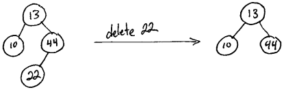
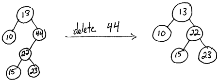
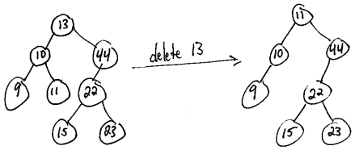
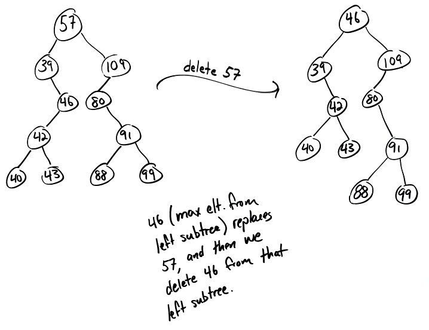
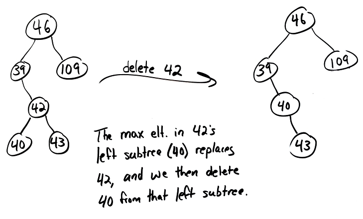

Today we tie up a few loose ends related to binary trees and code up a function for deleting nodes from a BST.
Lecture Video
Contents
1. BST Code
2. Runtime Analysis for Heapify
3. So, Why BSTs?
4. Deleting Values from BSTs
5. Additional BST Deletion Examples
6. Deletion Code
7. What's next?
8. Exercises
BST Code
Attachment: bst.zip
For ease of reference, here is the BST code we've written so far this week, including the bstDelete() function from class today.
Runtime Analysis for Heapify
Here is the Prezi for this section of today's notes:
We started today with a loose end from Lecture 17 on minheaps and priority queues: a formal analysis of the runtime of the heapify algorithm.
Recall that heapify takes an arbitrary vector or array and converts it into a representation of a valid minheap by calling precolateDown() on all the nodes from the bottom-rightmost non-leaf node back through the root node (index 0), like so:
int getParent(int child)
{
return (child - 1) / 2;
}
void heapify(Vector<int>& v)
{
// The last "node" in this vector is at index v.size() - 1. The bottom-rightmost
// non-leaf node in a complete binary tree will always be the parent of that last
// node.
//
// For example, in the follow tree, the bottom-rightmost non-leaf node is 38, which
// is the parent of the bottom-rightmost node in the tree (12). (All the nodes to
// the right of 38, as well as all the nodes on levels below it, are leaf nodes.)
//
// (Note that this is an arbitrary complete binary tree -- not a minheap.)
//
// 9
// / \
// 3 7
// / \ / \
// 38 20 10 14
// / \
// 15 12
// brmnln = "bottom-rightmost non-leaf node"
int brmnln = getParent(v.size() - 1);
for (int i = brmnln; i >= 0; i--)
{
percolateDown(v, i);
}
}
We traced through an example of this process in class as a refresher. (See timestamp 0:55 through 2:26 in today's lecture.)
At first, it might seem like the big-oh runtime for heapify would be O(n log n). After all, we know the worst-case runtime for percolateDown() is O(log n), and we're calling it n/2 times (since about half the nodes in a complete binary tree are non-leaves).
The runtime is even better than that, though. We incur the O(n log n) worst-case runtime for percolateDown() when we call it on the root and that value percolates all the way down the entire height of our tree. Calling percolateDown() on a node other than the root results in a better runtime because the value in that node cannot swap down quite as many levels as the root's value could. Thus, our O(n log n) runtime is necessarily an over-estimate.
In lecture, we saw that the worst-case number of swaps (which ultimately governs the runtime for our heapify algorithm) is less than n:
Thus, our runtime for heapify is O(n).
So, Why BSTs?
We then shifted gears a bit to talk about why we would ever want to use a BST to store data as opposed to, say, a vector, an array, or even a linked list. Here is a summary of key points on that topic:
- Balanced BSTs support worst-case logarithmic insertion, search, and deletion operations. If we want to maintain a sorted vector or array, inserting a new smallest element would require us to scoot all the existing elements over by one position, leading to an O(n) runtime, which is significantly worse than O(log n). (Of course, if we use a regular BST and not a balanced BST, we could always devolve into a linked list and incur O(n) runtimes for our insertion, search, and deletion operations.)
- With BSTs, we don't encounter the same space constraints we do with fixed-size arrays. Recall that a fixed-size array can end up using more space than necessary if we over-estimate how large it needs to be and never end up using all of its cells. Conversely, if we have an array that fills up and we want to add an element to it, we need to go through an expansion operation where we create a new, larger array, copy elements from our old array into the new one, and then add the new element to our larger, expanded array -- again, an O(n) operation. In contrast, with a BST, we always have exactly the number of nodes we need, and we create and delete nodes on the fly as needed.
- Arrays require contiguous blocks of memory. If we're working in a highly memory constrained system where memory has become fragmented, it might not be possible to find a contiguous block of memory large enough for some array we want to allocate, but it might still be possible to proceed with a linked data structure that spreads its nodes across memory.
- BSTs are great for streaming input. If we want to be able to binary search a collection of values, and all those values are provided to us ahead of time, sure -- we can just throw them into an array of the appropriate size, sort the array, and do binary search from there. However, if we have a situation where new values could stream into our collection at any time after we have already started performing searches and we want to be able to add those to our container and process them in real time, a balanced BST might be the way to go. A balanced BST will ensure that it remains nice and balanced and bushy and always has worst-case logarithmic runtimes for insertion, search, and deletion. In contrast -- as mentioned above -- with a vector or array, adding new elements could lead to expensive O(n) expansion operations or O(n) operations to scoot larger elements over to make room for new smaller elements at the beginning of our data structure.
- A key benefit of BSTs over linked lists is that if we keep a BST balanced, we get efficient search runtimes of O(log n). With a linked list, even if our elements are sorted, our worst-case runtime for search is O(n). (And of course, we have talked ad nauseam about how much better logarithmic runtimes are than linear runtimes. What is log2(1,000,000,000) again? 😉)
There are a few drawbacks to BSTs compared to arrays, though:
- Firstly, there are a lot of pointers involved, and dereferencing those pointers and journeying around memory could involve some extra runtime overhead compared to array cell accesses. For the purposes of anything we do in this class, that runtime hit would be so negligible as to be unobservable. That's something to keep in mind for software that needs to operate at a much larger scale, though.
- Secondly, and more importantly, the nodes in our BTSs take up more space than the cells in an array. On most systems these days, a single int variable in a C++ program takes up 32 bits (or 4 bytes) of memory. So, an array of n integers would take 4n bytes of memory. In a BST of integers, however, each node also keeps track of a left and right child pointer. On most systems these days, a pointer in C++ takes up 64 bits (or 8 bytes) of memory. The total memory for each node in a BST, then, is 4 + 8 + 8 = 20 bytes, meaning our BST takes up 20n bytes of memory in total. That's five times the space required to story those integers in an array!
Deleting Values from BSTs
We then dove into examples of deleting values from a BST.
For deletion, there are three distinct cases:
- If the node to be deleted is a leaf node:
Just prune it! Goodbye, leaf node! For example:

- If the node to be deleted has exactly one child:
Its child moves up to take is place, bringing along any children of its own. For example:

- If the node to be deleted has two children:
Replace the node's value with the maximum value in its left subtree, and then (recursively) delete that maximum value from the left subtree. For example:

Alternatively, if we delete a node has two children, we could replace the node's value with the minimum value from its right subtree (and then delete that min element from the right subtree). However, for the sake of keeping everything consistent and easy to grade on exams in this class, I always want you to choose option shown in class: use the maximum element from the node's left subtree.
Additional BST Deletion Examples
Here are some supplementary BST deletion examples to help clarify :


Deletion Code
Next, we coded up a BST deletion function from scratch and added it to the BST code we developed in our previous lecture.
We tested that our deletion function worked by first printing the pre-, post-, and in-order traversals for a BST, then deleting a node of our choice, and then printing the traversals once again to ensure they matched what we would expect after the successful removal of the node in question.
The complete code is attached above, but here's the deletion function for ease of reference:
// Recall that we pass a reference to our root pointer because we might want to
// change what this pointer is pointing to. That happens if we end up deleting the
// root node in this function call, in which case we want that pointer back in our
// calling function to be set to nullptr.
void bstDelete(Node*& root, int data)
{
// Base case. :) If there's nothing here, there's nothing to delete. Just return.
if (root == nullptr)
{
return;
}
if (data < root->data)
{
bstDelete(root->left, data);
}
else if (data > root->data)
{
bstDelete(root->right, data);
}
else
{
// Hooray, we found the value we want to delete!
if (root->left == nullptr && root->right == nullptr)
{
// This is the case where the node has no children. We can simply remove it
// from the tree.
delete root;
root = nullptr;
}
else if (root->right == nullptr)
{
// Here, we have a single child: a left child. It might seem a bit jarring
// not to check above whether root->left != nullptr, but we know that if
// root->right == nullptr, root->left can't be nullptr. If it were, then
// both children would be null, and we would have triggered the if condition
// above and never made it to this else-if condition.
//
// In this case, we need to delete the current node and move its left child
// up to take its place. Note that we can't safely access root->left after
// deleting root. The arrow operator (->) dereferences our struct pointer,
// and we should never dereference a pointer to something that has been
// deleted. So, we have to do a delicate dance here.
// Hold onto the left child. This will become the new root of this subtree.
Node *temp = root->left;
// Delete the node 'root' is pointing to. (This doesn't delete the local
// variable called 'root'. It's still a reference to the root pointer passed
// to this function. This just deletes the dynamically allocated node that
// 'root' was pointing to.)
delete root;
// Now set the root to point to the temp node -- the left child that is
// moving up to take its parent's place.
root = temp;
}
else if (root->left == nullptr)
{
// This is the case where we have just one child: a right child. The
// operation is symmetric to the one above.
Node *temp = root->right;
delete root;
root = temp;
}
else
{
// This is the case where we have two children. The max value in the left
// subtree needs to move up. Note that I'm not rewiring the tree here. I
// just leave this node in place and change the value it contains.
root->data = bstFindMax(root->left);
bstDelete(root->left, root->data);
}
}
}
To enable the bstDelete() function, I wrote this cheeky bstFindMax() function that doesn't bother checking whether root is null initially. For the purposes of deletion, it doesn't have to. We only ever call this function from bstDelete() if the node we're trying to delete has two children -- meaning that its left child is definitely non-null.
If someone were to pass this function an empty tree, however, it would totally segfault.
// Returns the largest value in this binary tree.
// WARNING! This function assumes root is non-null!
int bstFindMax(Node *root)
{
Node *current = root;
// To find the largest value in a BST, simply go right until we can't go
// right anymore!
while (current->right != nullptr)
{
current = current->right;
}
return current->data;
}
An alternative approach to this function, by the way, is to get rid of the current pointer altogether. We can change what root is pointing to locally because it's not a reference; it's just a local pointer variable:
// Returns the largest value in this binary tree.
// WARNING! This function assumes root is non-null!
int bstFindMax(Node *root)
{
// To find the largest value in a BST, simply go right until we can't go
// right anymore!
while (root->right != nullptr)
{
root = root->right;
}
return root->data;
}
What's next?
Thanksgiving break! I hope all of you have a safe, relaxing, restorative week off.
When we return from the break, we will talk about Huffman coding -- a data compression algorithm that will be the central topic for our final assignment in the course. Later that week, we will also talk about two incredibly important CS topics: hashing and graphs.
After that, we'll head into the final week of class, which we've designed to be a bit light in hopes that you won't be too overwhelmed or overworked as we head into final exams.
Exercises
1. We saw today that O(n log n) was an over-estimate for the runtime of heapify, and that the actual runtime was even better: O(n). Rather than using heapify, an alternative approach to converting an arbitrary vector or array into a minheap would be to insert the values it contained, one by one, into an initially empty minheap, like so:
// This function assumes we have access to a Minheap class.
Minheap<int> makeMinheap(Vector<int>& v)
{
// Allocate dynamically so it can live beyond the lifespan of this function. :)
Minheap<int> *heap = new Minheap<int>;
// Insert all values from the vector into our minheap.
for (int i : v)
{
heap->insert(i);
}
return heap;
}
What would be the runtime for the approach above?
Hint for Problem #1: You might find Stirling's approximation helpful in deriving your final answer.
2. Challenge yourself to recreate the recursive bstDelete() function from today's lecture without memorizing it verbatim and without peeking back at the notes. Alternatively, be sure to trace through the behavior of that function to develop a complete understanding of how it works.
3. Code up an iterative version of bstDelete().
4. What's wrong with the following function, whose goal is to find the height of a binary tree?
// This function returns the height of a binary tree based on the observation that
// a tree's height is 1 plus the height of the root's left subtree or right subtree
// -- whichever one is taller.
//
// For example, in the following diagram, the height of the root's left subtree
// (the subtree rooted at 3) is 2. The height of the root's right subtree (the
// subtree rooted at 7) is 1. The max of those two values (2 vs. 1) is 2. We add
// 1 to that to get the overall height of the tree. (Adding 1 accounts for the
// extra level that is added when we unite the left and right subtree beneath the
// root node.)
//
// 9 | height: 1 + max(2, 1) = 3
// / \ |
// height: 2 | 3 7 | height: 1 |
// | / \ / \ | |
// | 38 20 10 14 | |
// | / \ |
// | 15 12 |
int height(Node *root)
{
// Recall that the height of a tree with a single node is zero (0).
// If this node has no children, then we can simply return its height.
if (root->left == nullptr && root->right == nullptr)
{
return 0;
}
return 1 + max(height(root->left), height(root->right));
}
Highlight for solution to Problem #4: This code will segfault if we pass it an empty tree. Recall that the arrow operator (->) dereferences a struct pointer. So, if root is nullptr, we segfault right away. Please always be on the lookout for recursive binary tree functions that apply the arrow operator to root before checking whether it's nullptr or not.
5. Why does the height() function in the previous problem take a node pointer (Node *root) and not a reference to a pointer (Node*& root) like so many of our other binary tree functions have taken?
Highlight for solution to Problem #5: The height() function doesn't need to modify the tree, and so it has no need to be able to go back to the calling function and modify the pointer stored there -- which is what a reference would allow us to do.
6. In class today, we saw an iterative version of bstFindMax() that works for non-empty BSTs. Write a recursive version of bstFindMax() that assumes the BST it receives is non-empty.
7. Write a version of findMax() that works for arbitrary binary trees (not necessarily binary search trees). In the case of an empty tree, have your function return numeric_limits<int>::min(), which you can use if you #include <limits> at the top of your program.
8. Write a recursive contains(Node *root, int data) function that returns true if the given binary tree (not necessarily a binary search tree) contains data, false otherwise. Write a corresponding recursive version of this function that works on BSTs, and then write an iterative version of the BST function as well.
9. Write a findMin(Node *root) function that returns the smallest value in the given binary tree (not necessarily a binary search tree). Have your function throw an error if the initial tree is empty. Write a corresponding recursive version of this function that works on BSTs, and then write an iterative version of the BST function as well.
10. Write a function that takes the root of a binary tree and frees all dynamically allocated memory associated with that tree. Test that your function works by adding #include "MemoryDiagnostics.h" to the top of your source file, adding TRACK_ALLOCATIONS_OF(Node) to the Node struct definition, and creating and running a STUDENT_TEST that creates a non-empty binary tree and then calls your deallocation function on that tree.
11. Why might it be beneficial to write the function in the previous exercise as a pass-by-reference function?
Highlight for solution to Problem #11: After deallocating all the memory associated with that tree, it's best practice to set the root to nullptr back in whatever function called our deallocation function. Passing the root to our deallocation function by reference will allow us to do that.